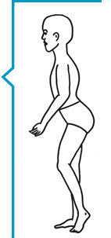
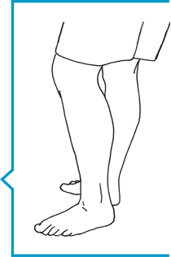

INTRODUCTION
Cette brochure a été conçue pour aider les personnes qui vivent avec des troubles de la coagulation à reconnaître les saignements articulaires et musculaires courants dès leur début afin que le traitement approprié puisse débuter le plus rapidement possible.
La brochure a été préparée pour que les personnes de tous âges puissent procéder à une autoévaluation et pour aider les parents à examiner leurs enfants.
Cette brochure vous aidera à :
- confirmer la présence et la localisation des saignements articulaires et musculaires courants;
- reconnaître les problèmes potentiellement graves qui peuvent découler de saignements articulaires et musculaires particuliers;
- déterminer à quel moment vous devez communiquer avec un centre de traitement des troubles de la coagulation (CTH);
- fournir des renseignements précis à votre CTH;
- documenter le saignement dans votre carnet de perfusion ou votre journal de suivi des saignements.s
La reconnaissance rapide et le traitement immédiat des saignements articulaires et musculaires sont indispensables pour prévenir certains problèmes à plus long terme. Votre centre de traitement des troubles de la coagulation travaillera avec vous pour mettre au point un plan de traitement. Cela vous demandera de vous rendre au CTH ou dans un centre local de soins de santé ou encore de vous administrer vous-même le produit à la maison.
En plus des produits prescrits pour enrayer le saignement, d’autres mesures comme le repos, la compression et l’évitement des exercices avec mise en charge sont également importants pour prévenir les complications à long terme. Un retour trop rapide aux activités régulières, sportives ou professionnelles pourrait retarder la guérison ou provoquer un nouveau saignement. Il est en outre essentiel de tenir des dossiers précis des soins administrés à la maison (au moyen de carnets de suivi des perfusions et des saignements) et de consulter régulièrement le CTH dans le cadre d’un traitement complet du trouble de la coagulation.
Déni de responsabilité: Cette brochure ne vise pas à se substituer à un examen ou à un traitement par le personnel du centre de traitement des troubles de la coagulation. Si vous participez à un programme d’administration des perfusions à domicile, tout saignement qui ne rentre pas dans l’ordre après deux doses de facteur/produit doit être signalé sans délai au centre de traitement.
Auteurs : Cette brochure a été préparée originalement sous le titre « Assessment and Treatment of Joint and Muscle Bleeds» en l’an 2000 par Kathy Mulder, physiothérapeute au Manitoba Bleeding Disorders Program, du Children’s Hospital de Winnipeg au Manitoba, et elle a été révisée par les physiothérapeutes suivants :
Pamela Hilliard, Hospital for Sick Children, Toronto – Bethany Iezama, IWK Health Centre, Halifax – Nichan Zourikian, CHU Sainte-Justine, Montréal
La présente version 2014 a été préparée par les physiothérapeutes suivantes :
Julia Brooks, Alberta Children’s Hospital, Calgary – Carolyn Jarock, IWK Health Centre, Halifax – Kathy Mulder, Children’s Hospital, Winnipeg – Sandra Squire, St. Paul’s Hospital, Vancouver
Révision par Eric K. et Justin S.
Illustrations par Chad Budyk et Kathy Mulder.
Copyright 2014
Saignements articulaires
Principes
- Une articulation est le point de jonction où deux os sont réunis et peuvent bouger.
- Les saignements peuvent affecter n’importe quelle articulation de l’organisme.
- Les saignements articulaires les plus fréquents affectent les chevilles, les coudes et les genoux.
- Le moindre choc peut déclencher un saignement.
- Les saignements qui ne sont pas soignés adéquatement et les saignements à répétition dans une même articulation peuvent entraîner des lésions permanentes.
Premiers symptômes d’un saignement articulaire
Un parent peut remarquer que son enfant boite ou qu’il a de la difficulté à bouger un membre.
La personne qui souffre du trouble de la coagulation sentira :
- une raideur ou une sensation de «picotements»;
- de l’inconfort au repos et à la mobilisation.
L’enflure n’est pas immédiatement perceptible; il est donc important de vérifier :
- la température de l’articulation au toucher : l’articulation semble plus chaude comparativement aux tissus avoisinants;
- une perte d’amplitude de mouvement comparativement au bras ou à la jambe opposés OU à l’amplitude de mouvement habituelle;
- une sensibilité au toucher.
Si le saignement persiste, on observera :
- une enflure;
- de la douleur;
- et parfois, une rougeur.
Traitement d’un saignement articulaire
Les principes de premiers soins recommandés pour tous les saignements articulaires se résument ainsi, par les lettres R-R-G-I-C-E.
R = Traitement de remplacement par facteur de la coagulation. Administrer le facteur en suivant les directives du centre de traitement.
R = Repos. Ne pas utiliser l’articulation tant qu’elle est douloureuse ou enflée. Si le saignement affecte la jambe, utiliser des béquilles ou un fauteuil roulant. S’il affecte le bras, utiliser une attelle pour le reposer.
G = Glace. La glace peut aider à soulager la douleur. On peut appliquer un bloc réfrigérant (ice pack), un gel réfrigérant ou de la glace concassée. Il faut toujours envelopper la glace dans une serviette éponge humide d’abord et ne jamais l’appliquer directement sur la peau. Pour un soulagement plus efficace, il est préférable que la glace entoure complètement l’articulation. Dans le cas des petites articulations, on laissera la glace en place pendant 5 à 10 minutes; pour les articulations plus grosses, il faut parfois maintenir la glace en place jusqu’à 20 minutes. On applique de nouveau la glace toutes les deux heures pendant les deux ou trois premiers jours ou jusqu’à ce que la douleur ait diminué.Cesser l’utilisation de la glace si la douleur augmente.
I = Immobilisation. Si l’articulation est très enflée ou si elle ne bouge plus, on peut la protéger à l’aide d’une attelle ou d’un demi-plâtre. Les attelles peuvent aussi être utiles chez les jeunes enfants qui risquent de ne pas comprendre la raison de l’immobilisation. Voir page 24 – quand immobiliser. Votre CTH/physiothérapeute vous indiqueront le type et la durée de l’immobilisation requise.
C = Compression. Un bandage ou un manchon élastique soutiendront l’articulation et aideront à maîtriser l’enflure. Toutefois, si l’articulation est très douloureuse, la compression peut être difficile à tolérer. Il faut surveiller de près la circulation. Dès la moindre sensation d’engourdissement ou de picotements, il faut retirer immédiatement la compression.
E = Élévation. Le fait de garder l’articulation touchée à 15 cm (6 po) au-dessus du niveau du coeur réduira la pression exercée sur les vaisseaux sanguins lésés et ralentira l’enflure.
Pour tous les saignements articulaires
Après un saignement articulaire quel qu’il soit, il y aura de l’inflammation à l’intérieur de l’articulation à mesure qu’elle guérit. Cela est tout à fait normal dans le processus de guérison et peut durer quelques semaines, même si l’articulation paraît normale et qu’elle bouge bien. Un arrêt trop hâtif du traitement ou la reprise de toutes les activités avant que l’inflammation n’ait disparu peuvent provoquer un nouveau saignement.Le traitement préconisé par votre CTH doit être maintenu jusqu’à ce que l’articulation soit redevenue normale.
CHEVILLE
Ce que vous pourriez observer :
- Boitement;
- Démarche sur la pointe des pieds, incapacité de placer le talon au sol;
- Démarche le pied tourné vers l’extérieur.

Ce que vous pourriez ressentir :
- Chaleur à l’avant de la cheville.
Ce que vous devriez surveiller :
- Enflure - y a-t-il de l’enflure à l’avant de la cheville ou autour des os de chaque côté de la cheville?
- Mouvement - le pied peut-il être fléchi aussi haut que l’autre pied? (Faites l’exercice le genou fléchi.)
Ce que vous devriez faire :
- Suivez le plan de traitement de votre CTH :
- - Utilisez le facteur de remplacement, comme on vous l’a indiqué;
- - Mettez l’articulation au repos. Ne marchez pas sur ce pied. Utilisez des béquilles ou une marchette si vous le pouvez ou un fauteuil roulant (une poussette ou une voiturette pour les jeunes enfants);
- - Commencez les exercices après l’arrêt du saignement, comme votre physiothérapeute vous l’aura indiqué.
- Continuez d’appliquer le plan de traitement jusqu’à ce que la cheville retrouve son état d’avant le saignement. Pour des articulations en santé, cela signifie généralement :
- - La cheville peut fléchir vers le bas et vers le haut, complètement et sans douleur;
- - Il n’y a aucune enflure perceptible;
- - La cheville n’apparaît pas boursouflée ou enflée;
- - Il n’y a aucune douleur à la mise en charge;
- - La force et l’équilibre sont revenues.
GENOU
Ce que vous pourriez observer :
- Un boitement, une démarche avec le genou fléchi;
- L’incapacité de déplier et/ou de fléchir le genou complètement.

Ce que vous pourriez ressentir :
- Chaleur à l’avant du genou et de chaque côté de la rotule;
- Enflure de chaque côté et au-dessus de la rotule.
Ce que vous devriez surveiller :
- Enflure - pouvez-vous voir les creux de chaque côté de la rotule? Ont-ils la même apparence comparativement à l’autre genou?
- Le genou peut-il être déplié complètement sans effort?
- Le genou peut-il fléchir complètement sans effort?

Ce que vous devriez faire :
- Suivez le plan de traitement de votre CTH :
- - Utilisez le facteur de remplacement, comme on vous l’a indiqué;
- - Mettez l’articulation au repos. Utilisez des béquilles ou une marchette si vous le pouvez ou un fauteuil roulant (une poussette ou une voiturette pour les jeunes enfants);
- - Commencez les exercices après l’arrêt du saignement, comme votre physiothérapeute vous l’aura indiqué.
- Continuez d’appliquer le plan de traitement jusqu’à ce que le genou retrouve son état d’avant le saignement. Pour des articulations en santé, cela signifie généralement :
- - Le genou peut être fléchi complètement et sans douleur;
- - Il n’y a aucune enflure perceptible;
- - Le genou n’apparaît pas boursouflé ou enflé;
- - Il n’y a aucune douleur à la mise en charge;
- - Les muscles de la cuisse sont forts.
COUDE
Ce que vous pourriez observer :
- Réticence à utiliser le bras et expression de douleur à la mobilisation;
- Coude maintenu fléchi et près du corps.
Ce que vous pourriez ressentir :
- Chaleur au coude (par opposition au pli du coude).
Ce que vous devriez surveiller :
- Enflure - pouvez-vous voir les creux postérieurs (fossettes) au niveau du coude?
- Le bras peut-il être déplié complètement? (Noter : De nombreux enfants peuvent déplier leur coude AU -DELÀ d’une ligne droite [hyperlaxité]. Assurez-vous de le comparer avec l’autre bras.);
- Le coude peut-il être déplié complètement lorsque la paume est tournée vers le haut?
- - Le coude se compose de deux articulations : l’une qui se plie et se déplie comme une penture et l’autre qui permet à l’avant-bras de pivoter. Pour les saignements légers ou qui viennent de débuter, chacun de ces mouvements peut sembler complet si on les teste isolément, mais on observera une perte de mobilité si les deux mouvements sont testés ensemble. Votre physiothérapeute peut vous enseigner quels signes surveiller.

Ce que vous devriez faire :
- Suivez le plan de traitement de votre CTH :
- - Utilisez le facteur de remplacement, comme on vous l’a indiqué. (Si vous vous administrez vous-même vos perfusions, vous pourriez avoir besoin d’aide à cet effet.);
- - Mettez l’articulation au repos. Vous aurez peut-être besoin d’une écharpe ou d’une attelle;
- - Commencez les exercices après l’arrêt du saignement, comme votre physiothérapeute vous l’aura indiqué.
- Continuez d’appliquer le plan de traitement jusqu’à ce que le coude retrouve son état d’avant le saignement. Pour des articulations en santé, cela signifie généralement :
- - Il n’y a aucune enflure perceptible;
- - Le coude n’apparaît pas boursouflé ou enflé;
- - Le coude peut être déplié aussi loin que l’autre coude;
- - Le coude peut se plier et se déplier facilement et sans douleur, même lorsque la paume est tournée vers le haut.
ÉPAULE

Ce que vous pourriez observer :
- Bras maintenu près du corps;
- Réticence à utiliser le bras.
Ce que vous pourriez ressentir :
- Chaleur à l’avant de l’épaule.
Ce que vous devriez surveiller :
- Enflure - pouvez-vous sentir le creux à l’avant de l’épaule? Le creux se présente-t-il de la même façon que pour l’autre épaule ou semble-t-il y avoir de l’enflure?
- Pouvez-vous lever le bras au-dessus de votre tête entièrement et sans douleur?
- Pouvez-vous placer entièrement la main sur votre nuque, et ce, sans douleur?

Ce que vous devriez faire :
- Suivez le plan de traitement de votre CTH :
- - Utilisez le facteur de remplacement, comme on vous l’a indiqué. (Si vous vous administrez vous-même vos perfusions, vous pourriez avoir besoin d’aide à cet effet.);
- - Déposez le bras sur des oreillers ou suspendez-le dans une écharpe;
- - Commencez les exercices après l’arrêt du saignement, comme votre physiothérapeute vous l’aura indiqué.
- Continuez d’appliquer le plan de traitement jusqu’à ce que l’épaule retrouve son état d’avant le saignement. Pour des articulations en santé, cela signifie généralement :
- - Le bras peut être levé au-dessus de la tête sans douleur;
- - Le bras peut être levé vers l’extérieur, jusqu’à l’oreille, sans douleur;
- - Le bras peut être porté à la nuque facilement;
- - Comparez chacun de ces mouvements à ceux de l’autre bras. Les mouvements semblent-ils pareils? Il est facile de «tricher» avec les mouvements de l’épaule.
ARTICULAT IONS DES DOIGTS
Les saignements dans les petites articulations de la main sont rares. Ils résultent habituellement d’un traumatisme direct et connu, par exemple, recevoir une balle sur un doigt, ou le coincer et le tordre.
En plus de soigner le saignement, il est important de vérifier qu’il n’y ait pas de fracture ou d’entorse grave. Assurez-vous de communiquer avec votre CTH pour qu’on vous dise quoi faire.
Ce que vous pourriez observer :
- Les doigts restent en position légèrement fléchie.
Ce que vous pourriez ressentir :
- Chaleur sur le dessus de l’articulation;
- Douleur au mouvement.
Ce que vous devriez surveiller :
- Enflure;
- Incapacité de plier ou de déplier le doigt complètement;
- Douleur au mouvement et sensibilité au toucher.
Ce que vous devriez faire :
- Appelez votre CTH. Des radiographies pourraient être nécessaires;
- Suivez le plan de traitement de votre CTH :
- - Utilisez le facteur de remplacement, comme on vous l’a indiqué. (Si vous vous administrez vous-même vos perfusions, vous pourriez avoir besoin d’aide à cet effet.);
- - Mettez la main au repos; vous pourriez avoir besoin d’une attelle.
- Continuez d’appliquer le plan de traitement jusqu’à ce que le doigt puisse fléchir et se déplier complètement sans douleur.
ARTICULAT IONS DES ORTEILS
Les saignements des petites articulations des orteils sont rares. Ils peuvent affecter les enfants lorsqu’ils jouent en position accroupie ou assis sur les talons.
Chez les enfants plus âgés, les adolescents et les adultes, les saignements articulaires aux orteils peuvent survenir si la personne s’est frappé le pied ou s’est fait écraser l’orteil. Si on connaît l’origine du traumatisme, il est important de s’assurer qu’il n’y ait pas de fracture. Si on NE connaît PAS l’origine du saignement, il faut communiquer avec le CTH pour écarter d’autres problèmes de santé.
Ce que vous pourriez observer :
- Boitement.
Ce que vous pourriez ressentir :
- Chaleur sur l’articulation;
- Douleur à la mobilisation.
Ce que vous devriez surveiller :
- Enflure;
- Perte de mobilité - les orteils peuvent-ils être fléchis et dépliés complètement? (Comparez avec l’autre pied).
Ce que vous devriez faire :
- Communiquez avec votre CTH. Il s’agit d’une localisation inhabituelle pour un saignement. Des examens plus approfondis pourraient être requis;
- Suivez le plan de traitement de votre CTH :
- - Utilisez du facteur s’il s’agit d’un saignement;
- - Mettez le pied au repos; utilisez une canne, des béquilles ou encore un fauteuil roulant (une poussette ou une voiturette pour les jeunes enfants).
- Continuez d’appliquer le plan de traitement jusqu’à ce que le mouvement soit complet et que vous puissiez marcher normalement, sans douleur.
Saignements musculaires
Principes
- N’importe quel muscle peut présenter un saignement;
- Un saignement musculaire peut survenir lorsqu’un muscle est trop étiré, lors d’un choc contre quelque chose de dur ou lorsqu’il est surutilisé;
- Les causes fréquentes des saignements musculaires sont notamment :
- - les glissades;
- - les chutes;
- - les collisions avec une personne ou un objet;
- - le fait de soulever un objet trop lourd; ou
- - les mouvements répétitifs.
- Le saignement commence lorsque les petites fibres musculaires sont déchirées. Ces blessures guérissent en laissant des cicatrices qui ne sont pas aussi flexibles que le tissu musculaire normal. Il faut étirer le muscle de la façon appropriée, sinon une nouvelle blessure pourrait facilement survenir.
Les saignements musculaires sont différents des saignements articulaires parce que…

Les saignements musculaires sont moins fréquents que les saignements articulaires. Par conséquent, bien des gens ne comprennent pas aussi bien en quoi ils consistent : « O h, je me suis juste étiré un muscle ». En fait, les saignements musculaires peuvent avoir des conséquences plus graves que les saignements articulaires en raison de leurs complications.
Dans certains muscles volumineux, l’enflure extérieure n’est pas toujours perceptible au début parce que le sang ne reste pas dans une seule zone et fuit lentement entre les différentes couches musculaires.
De nombreux muscles plus en profondeur sont enveloppés d’une membrane dense appelée fascia, formant des compartiments. Les nerfs et les vaisseaux sanguins sont également contenus dans ces compartiments. Les saignements qui affectent ces muscles remplissent rapidement cet espace et peuvent entraîner une pression sur les nerfs et les vaisseaux sanguins et des dommages au muscle.
Certains muscles supportent plus d’une articulation. Le mouvement de l’une ou l’autre des articulations peut sembler normal au début. Toutefois, si LES DEUX articulations sont mises à l’épreuve en même temps, on pourra confirmer le saignement musculaire.
Premiers symptômes d’un saignement musculaire
Un parent peut remarquer que l’enfant boite ou qu’il a de la difficulté à bouger un membre.
La personne atteinte du trouble de la coagulation remarquera :
- de l’inconfort et une sensation de raideur ou picotements;
- de la douleur au relâchement du muscle;
- de la douleur à la contraction du muscle (mis au travail).
L’enflure n’est pas immédiatement perceptible; c’est pourquoi il est important de surveiller :
- de la chaleur dans la région du saignement;
- de la sensibilité à l’application de pression.
Signes plus tardifs
- douleur, même lorsque le muscle est au repos;
- enflure, fermeté et sensibilité du muscle;
- sensation de PICOTEMENTS et D’ENGOURDISSEMENT.
Si l’un ou l’autre de ces signes est présent, il s’agit d’une situation d’urgence. Appelez votre centre de traitement SANS TARDER!
Traitement d’un saignement musculaire
Les principes de premiers soins recommandés pour tous les saignements musculaires se résument ainsi, par les lettres R-R-G-I-C-E.
R = Traitement de remplacement par facteur de la coagulation. Administrer le facteur en suivant les directives du centre de traitement.
R = Repos. Ne pas utiliser le muscle tant qu’il est douloureux. Si le saignement affecte la jambe, utiliser des béquilles ou un fauteuil roulant. S’il affecte le bras, utiliser une attelle pour le reposer.
G = Glace. La glace peut aider à soulager la douleur si le saignement musculaire n’est pas trop
profond. On peut appliquer un bloc réfrigérant (ice pack), un gel réfrigérant ou de la glace
concassée. Il faut toujours envelopper la glace dans une serviette éponge humide d’abord et
ne jamais l’appliquer directement sur la peau.
Pour un soulagement plus efficace, il est préférable que la glace entoure complètement le
muscle. Pour les saignements des muscles plus volumineux, il faut parfois maintenir la glace en
place jusqu’à 20 minutes. On applique de nouveau de la glace toutes les deux heures pendant
les deux ou trois premiers jours ou jusqu’à ce que la douleur ait diminué. Cesser l’utilisation de
la glace si la douleur augmente.
I = Immobilisation. En présence d’une douleur intense et d’une perte de mobilité, on peut utiliser une attelle ou un demi-plâtre pour permettre le relâchement musculaire. Les attelles peuvent aussi être utiles chez les jeunes enfants qui risquent de ne pas comprendre la raison de l’immobilisation. Voir page 24 – quand immobiliser. Votre CTH/physiothérapeute vous fournira des conseils sur le type d’immobilisation à utiliser et sur sa durée.
C = Compression. Un bandage élastique ou un coussinet de compression peuvent servir à comprimer le muscle et à aider à maîtriser l’enflure. Il faut surveiller de près la circulation. Dès la moindre sensation d’engourdissement ou de picotements, ou si la douleur augmente, il faut retirer immédiatement la compression et informer votre CTH.
E = Élévation. Le fait de garder le muscle blessé à 15 cm (6 po) au-dessus du niveau du coeur réduira la pression exercée sur les vaisseaux sanguins lésés et ralentira le saignement jusqu’à ce qu’on puisse administrer la perfusion de facteur.
Pour tous les saignements musculaires
Il faut continuer le traitement en suivant les directives du CTH jusqu’à ce que le muscle soit complètement rétabli et qu’il ait repris toute sa force. Si vous recommencez vos activités sportives ou professionnelles trop rapidement, il y a de fortes chances que le muscle saigne de nouveau. Il est important d’effectuer les exercices appropriés pour regagner entièrement votre force et votre flexibilité musculaires. Communiquez avec votre physiothérapeute pour des recommandations avant de reprendre vos activités régulières, qu’il s’agisse d’activités sportives ou professionnelles.

MUSCLE PSOAS
(ou iliopsoas)
Le muscle psoas est situé à l’avant de l’articulation de la hanche; c’est un muscle qui s’insère profondément dans le bassin.
Ce muscle peut être lésé lors d’un étirement soudain (p. ex., trébucher ou glisser sur la glace) ou encore lors d’un usage répété (p. ex., lors d’activités sportives ou sexuelles).
Ce que vous pourriez observer :
- Boitement;
- Démarche sur la pointe des pieds; OU
- Démarche avec le genou fléchi; OU
- Démarche avec le corps légèrement tordu; OU
- Démarche avec les fesses plus bombées qu’à l’habitude; OU
- Toutes ces réponses.
Ce que vous pourriez ressentir :
- Malaise au niveau de l’aine OU du dos OU du devant de la cuisse;
- Difficulté à s’allonger à plat sur le dos.

Ce que vous pouvez faire pour vérifier :
- Étendez-vous sur le dos et commencez avec la hanche et le genou fléchis.
- Allongez délicatement votre jambe. Arrêtez si vous constatez que votre dos est arqué ou que cela aggrave la douleur à l’aine, à la cuisse ou au dos.
Ce que vous DEVEZ faire :
- Appelez immédiatement le CTH pour qu’on vous dise quoi faire;
- Suivez le plan de traitement de votre CTH :
- - Utilisez le facteur de remplacement, comme on vous l’a indiqué;
- - ÉVITEZ la position debout et la marche;
- - N’essayez PAS d’utiliser des béquilles;
- - N’essayez PAS de conduire votre automobile;
- - REPOSEZ-VOUS au lit, la jambe soutenue en position confortable jusqu’à ce que vous puissiez déplier la hanche confortablement sans arquer votre dos;
- - Parlez à votre physiothérapeute au sujet de la meilleure façon de vous REPOSER et d’immobiliser ce muscle. Il est inutile d’utiliser la glace, la compression ou l’élévation pour les saignements du psoas parce que ce muscle est trop profond.
Ce que vous devriez surveiller :
- Si vous percevez des picotements à la cuisse, il s’agit d’une situation grave qui pourrait indiquer que les nerfs et les vaisseaux sanguins sont comprimés. Appelez votre CTH sans délai;
- Si les muscles qui permettent de déplier le genou sont faibles, il s’agit d’une situation grave : le nerf qui contrôle ces muscles a été comprimé et pourrait être endommagé. Appelez votre CTH sans délai.
Reprise des activités :
- Le muscle psoas peut facilement être blessé de nouveau s’il n’est pas d’abord mis au repos, puis remis en mouvement au moyen d’exercices appropriés;
- Suivez le plan de traitement de votre équipe du CTH jusqu’à rétablissement complet;
- Un programme supervisé de physiothérapie SERA nécessaire pour assurer un rétablissement complet;
- Il peut falloir plusieurs SEMAINES avant que le muscle ne revienne à la normale;
- Ne recommencez pas à marcher tant que votre physiothérapeute ne vous en aura pas donné l’autorisation;
- Vérifiez TOUJOURS auprès de votre physiothérapeute avant de reprendre vos activités régulières, que ce soit pour le travail ou pour les activités sportives.
MUSCLES DE L’AVANT-BRAS
Des groupes de muscles distincts sont situés à l’avant et à l’arrière de l’avant-bras. Ces muscles permettent de bouger le poignet et les doigts. Les muscles du devant de l’avant-bras peuvent être blessés lorsque le poing est longtemps serré (p. ex., sur les guidons d’une bicyclette ou le manche d’une guitare). De leur côté, les muscles situés à l’arrière de l’avant-bras sont souvent blessés par des mouvements répétés (p. ex., taper avec un marteau ou jouer au tennis). Les deux groupes de muscles peuvent aussi être blessés lors d’un coup direct, par exemple si on reçoit une balle de baseball.

Ce que vous pourriez observer :
- Difficulté à utiliser le bras;
- Douleur au moment de saisir ou de soulever des objets.
Ce que vous pourriez ressentir :
- Chaleur et sensibilité à la partie charnue et souple de l’avant-bras;
- Douleur dans l’avant-bras si le poignet est replié vers le haut et vers le bas.
Ce que vous pouvez faire pour vérifier :
- Le côté avant (paume) de l’avant-bras est plus souvent le siège de saignements;
- Vérifiez la flexibilité en fléchissant le poignet vers l’arrière tout en gardant les doigts allongés;
- Si cela est confortable, dépliez délicatement le coude. Comparez l’amplitude du mouvement par rapport à l’autre côté;

- Si les muscles à l’arrière de l’avant-bras sont touchés, fléchissez les doigts tout en fléchissant le poignet vers le bas;
- Si cela est confortable, dépliez délicatement le coude et comparez avec le bras opposé.

Ce que vous DEVEZ faire :
- Appelez le CTH pour qu’on vous dise quoi faire;
- Suivez le plan de traitement de votre CTH :
- - Utilisez le facteur de remplacement, comme on vous l’a indiqué. (Si vous vous administrez vous-même vos perfusions, vous pourriez avoir besoin d’aide à cet effet.);
- - Vous pourriez avoir besoin d’une écharpe pour reposer le muscle.
Ce que vous devriez surveiller :
- "Pins and needles" or tingling in the hand. This is serious and cDes sensations de picotements dans la main. Il s’agit d’un symptôme grave qui peut s’accompagner d’une détérioration permanente s’il n’est pas traité adéquatement. Communiquez avec votre CTH sans délai. Les muscles, les nerfs et les vaisseaux sanguins de l’avant-bras sont tous recouverts d’une membrane dense appelée fascia. Si le sang commence à emplir cet espace, les nerfs et les vaisseaux sanguins risquent d’être comprimés. (Voir illustrations à la page 12 – saignements musculaires profonds et superficiels)
Reprise des activités :
- Voyez votre physiothérapeute et continuez vos exercices jusqu’à ce que vous ayez entièrement retrouvé la flexibilité et la force de votre poignet ET de vos doigts;
- Vérifiez TOUJOURS auprès de votre physiothérapeute avant de reprendre le travail ou les activités sportives.
MOLLET

Le mollet comporte plusieurs muscles. Les muscles du mollet peuvent être blessés par un coup direct (p. ex., un coup de pied), ou de leur surutilisation dans les sports ou au travail. Le muscle le plus souvent blessé est celui qui se trouve le plus en surface et que l’on appelle le muscle gastrocnémien; il va du talon jusqu’à tout juste au-dessus du genou. Ce muscle recouvre la couche musculaire suivante du mollet appelée muscle soléaire. Ce muscle s’arrête au-dessous du genou. Plus profondément, se trouvent les muscles qui permettent de fléchir les orteils.
Ce que vous pourriez observer :
- Boitement;
- Démarche avec le pied tourné vers l’extérieur;
- Incapacité de marcher le talon à plat sur le plancher.

Ce que vous pourriez ressentir :
- Sensation de serrement à la partie inférieure de la jambe/mollet;
- Sensibilité si le muscle du mollet est comprimé;
- Sensibilité du muscle si vous bougez votre cheville vers le haut et vers le bas;
- Fermeté du muscle.
Ce que vous pouvez faire pour vérifier :
- Observez la flexibilité du muscle et comparez-la à l’autre
côté. Dans les premiers stades d’un saignement du muscle
gastrocnémien, les mouvements de la cheville peuvent être
les mêmes pour les deux jambes lorsque le genou est plié.
Toutefois, si le genou est droit, il y aura plus de tension dans le
muscle; le mouvement de la cheville peut alors être limité et le
mollet sera douloureux lorsqu’il est étiré.
Pour confirmer la localisation du saignement, vous devrez tester chaque muscle séparément.

- TEST N° 1
- En position assise, genoux fléchis. Essayez de poser les deux talons à plat sur le plancher. En gardant le talon sur le plancher, fléchissez le genou et faites glisser le pied vers l’arrière. Comparez le mouvement et la sensation de serrement dans le muscle du mollet par rapport à l’autre jambe. S’il y a un inconfort et si le mouvement est restreint, le saignement pourrait se trouver soit dans le muscle gastrocnémien, soit dans le muscle soléaire.
- En l’absence d’inconfort lors de ce test, vous pouvez passer au test N° 2.
- TEST N° 2
- Tenez-vous debout. Placez le talon à plat au sol. Dépliez délicatement le genou. Si cela provoque de la douleur au mollet, le saignement affecte probablement le muscle gastrocnémien.

- TEST N° 3
- Il arrive très rarement que le saignement affecte les muscles plus profonds, les fléchisseurs des orteils. Pour en confirmer la présence, tenez-vous debout, le talon à plat et le genou déplié. Avec les orteils à plat au sol, soulevez le talon. Si cela entraîne une douleur au mollet, le saignement affecte plus probablement le compartiment profond des fléchisseurs. Cela peut être grave.
Ce que vous devriez faire :
- Appelez le CTH pour qu’on vous dise quoi faire;
- Suivez le plan de traitement de votre CTH :
- - Utilisez le facteur de remplacement, comme on vous l’a indiqué;
- - Mettez le muscle au repos : évitez la station debout jusqu’à ce que vous puissiez placer le pied à plat sur le plancher sans douleur au muscle;
- - Évitez la marche, sauf avec des béquilles ou une marchette, jusqu’à ce que vous puissiez placer le talon au sol facilement, sans forcer;
- - Continuez d’utiliser vos béquilles jusqu’à ce que vous puissiez marcher correctement. Vous devriez pouvoir placer votre talon à plat d’abord puis votre pied à plat et, ensuite, vous soulever sur le bout des pieds.

Ce que vous devriez surveiller :
- Si vous ressentez un engourdissement ou des picotements aux orteils, il peut s’agir d’une situation grave. Appelez le CTH sans délai;
- En présence de douleur intense et/ou d’une sensation de pulsation dans le mollet, il s’agit aussi d’une situation grave. Il pourrait même s’agir d’une urgence. Appelez votre CTH sans délai.
Reprise des activités :
- Faites les exercices prescrits par votre physiothérapeute jusqu’à ce que vous ayez retrouvé une flexibilité et une force normales;
- Vérifiez auprès de votre physiothérapeute avant de reprendre le travail, surtout si celui-ci vous oblige à rester debout ou à marcher pendant de longues périodes;
- Vérifiez auprès de votre physiothérapeute avant de courir ou de revenir aux sports. Si le muscle n’est pas suffisamment flexible ou fort, il pourrait être facilement blessé de nouveau par la course ou les sauts.
ISCHIOJAMBIERS
Les muscles ischiojambiers sont situés à l’arrière de la cuisse. Leur travail est de permettre l’extension de la hanche et la flexion du genou. Ils peuvent être blessés lors d’un étirement soudain ou d’une surutilisation. Lorsque les adolescents ont une poussée de croissance, ces muscles n’arrivent pas toujours à s’allonger au même rythme que la croissance des os. Cela les rend plus sujets aux blessures, surtout lors de la pratique de sports. Les muscles ischiojambiers peuvent aussi devenir tendus après un saignement au genou parce qu’ils se raidissent pour protéger le genou.
Ce que vous pourriez observer :
- Boitement et genou légèrement fléchi ou enjambée plus courte du côté douloureux.
Ce que vous pourriez ressentir :
- Chaleur et sensibilité à l’arrière de la cuisse. Les saignements aux ischiojambiers sont relativement douloureux.
Ce que vous pouvez faire pour vérifier :
- Les ischiojambiers vont de la hanche au genou. Il peut être possible de déplier complètement le genou quand la hanche est dépliée, mais non quand la hanche est fléchie.
- TEST N° 1
- En position debout : Le genou peut-il être complètement déplié sans inconfort à l’arrière de la cuisse? Si non, commencez votre plan de traitement. Si oui, passez au test N° 2.

- TEST N° 2
- En position assise sur une chaise, le dos droit, dépliez lentement et délicatement le genou jusqu’à ce que vous sentiez que « ça tire » à l’arrière de la cuisse. Comparez l’amplitude du mouvement et l’inconfort avec l’autre jambe.
Ce que vous devez faire :
- Suivez le plan de traitement de votre CTH :
- - Utilisez le facteur de remplacement, comme on vous l’a indiqué;
- - Évitez de marcher, même avec une aide, jusqu’à ce que les tests de flexibilité soient indolores;
- - Si vous utilisez une aide à la marche, vous pouvez poser votre pied sur le sol pour reposer votre muscle, mais ne mettez pas tout votre poids sur ce pied.
Ce que vous devriez surveiller :
- Les saignements aux ischiojambiers peuvent être relativement douloureux. Selon la localisation du saignement, il est parfois difficile de s’asseoir confortablement.
Reprise des activités :
- Les ischiojambiers peuvent très facilement être blessés de nouveau, même chez les athlètes professionnels, si on ne respecte pas une période de repos et si on ne fait pas les exercices d’étirement et de musculation appropriés. Un programme de physiothérapie supervisé SERA nécessaire pour assurer un rétablissement complet;
- Vérifiez auprès de votre physiothérapeute avant de reprendre quelque type de course que ce soit.
QUADRICEPS
Le muscle quadriceps est un groupe de quatre muscles situés à la face antérieure de la cuisse. Son travail principal consiste à permettre l’extension du genou. Les plus superficiels de ces muscles aident aussi à la flexion de la hanche. Le quadriceps peut être blessé lors d’un étirement vigoureux et subit, par exemple lors d’un sprint non précédé d’un échauffement. Plus souvent, ces muscles sont blessés par un choc direct, par exemple recevoir une balle de baseball ou un coup de genou d’un autre joueur.
Ce que vous pourriez observer :
- Boitement et enjambées courtes de ce côté;
- Difficulté à fléchir le genou.
Ce que vous pourriez ressentir :
- Sensibilité et parfois, chaleur au coeur du muscle.

Ce que vous pouvez faire pour vérifier :
- TEST N° 1
- Essayez de fléchir le genou complètement (ramenez le talon vers les fesses). Si le saignement est important et affecte les muscles plus en profondeur, cela sera inconfortable. Si seul le muscle superficiel est blessé, vous pouvez devoir utiliser le test suivant pour le confirmer.
- TEST N° 2
- En position allongée sur le dos, près du rebord de votre lit, fléchissez le genou opposé pour maintenir votre dos à plat et laissez délicatement la jambe endolorie pendre en bas du lit. S’il y a un saignement au quadriceps, la hanche pourrait ne pas obéir et la douleur à la cuisse augmentera à mesure que le genou fléchira.

Ce que vous devriez faire :
- Suivez le plan de traitement de votre CTH :
- - Utilisez le facteur de remplacement, comme on vous l’a indiqué;
- - Ne marchez pas sur la jambe blessée. Utilisez des béquilles ou un fauteuil roulant;
- - Le physiothérapeute pourrait recommander une compression ou une attelle;
- - Après l’arrêt du saignement, commencez les exercices en suivant les indications de votre physiothérapeute;
- - Continuez les exercices jusqu’à ce que le muscle soit flexible et fort.
Ce que vous devriez surveiller :
- Les saignements du quadriceps peuvent enfler beaucoup et guérir en formant du tissu cicatriciel ou même une calcification (dépôts de calcium dans le muscle), qui limiteront le mouvement.
Reprise des activités :
- Les saignements du quadriceps nécessitent souvent un programme supervisé de physiothérapie pour aider au rétablissement et à la reprise d’une flexibilité complète;
- Vérifiez auprès de votre physiothérapeute avant de reprendre le travail et avant de recommencer à courir ou à pratiquer des sports.
Muscles fessiers
Ces muscles volumineux et charnus peuvent être blessés lors de chutes arrière, directement sur les fesses. Les saignements aux muscles fessiers sont fréquents chez les bambins qui apprennent à marcher. Un saignement dans les muscles fessiers peut également survenir chez les adultes qui glissent et chutent dans les escaliers ou sur la glace.
Ce que vous pourriez observer :
- Incapacité de s’asseoir confortablement;
- Difficulté à fléchir la hanche;
- Léger boitement et enjambées plus courtes de ce côté.

Ce que vous pourriez ressentir :
- Sensibilité et une bosse au coeur des muscles fessiers.
Ce que vous pouvez faire pour vérifier :
- Essayez de fléchir la hanche (ramener le genou vers la poitrine). Si vous sentez que « ça tire » au niveau des fesses, ce pourrait être un signe de saignement;
- Les deux fesses pourraient aussi présenter un contour différent.
Ce que vous devriez faire :
- Communiquez avec le CTH et suivez le plan de traitement :
- - Utilisez le facteur de remplacement, comme on vous l’a indiqué;
- - Ne marchez pas sur la jambe blessée, utilisez des béquilles;
- - Évitez la position assise jusqu’à ce que la sensibilité se soit atténuée;;
- - Une fois que le saignement a cessé, commencez des exercices en suivant les indications de votre physiothérapeute.
Ce que vous devriez surveiller :
- Les saignements aux muscles fessiers peuvent enfler beaucoup et prendre un certain temps pour guérir complètement.
Reprise des activités :
- Évitez les activités qui pourraient entraîner une nouvelle blessure aux muscles pendant la guérison. Utilisez un rembourrage supplémentaire pour protéger les tout-petits;
- Vérifiez auprès de votre physiothérapeute avant de retourner à la course, aux sports ou au travail.
QUAND IMMOBILISER
Les saignements détectés et soignés sans délai peuvent ne pas nécessiter d’immobilisation si la personne se repose adéquatement.
Toutefois, l’immobilisation peut être recommandée dans les cas suivants :
- Enfants qui peuvent être trop jeunes pour utiliser des aides à la marche ou pour comprendre la nécessité du « repos ».
- Saignements articulaires accompagnés d’une enflure perceptible, de douleur et d’une perte de mobilité.
- Saignements musculaires (surtout à l’avant-bras, aux ischiojambiers et au mollet), en présence de douleur et de difficulté à bouger. Les attelles pour les saignements musculaires doivent être changées tous les quelques jours, à mesure que le muscle guérit et que la flexibilité s’améliore.
Communiquez toujours avec votre physiothérapeute du CTH pour des recommandations sur les circonstances où il est préférable d’immobiliser et sur la façon de procéder.
Un demi-plâtre ou une attelle amovible sont préférables à un plâtre complet qui risquerait de nuire à la circulation si l’enflure augmente. On ne doit laisser l’attelle en place que deux ou trois jours, après quoi on revérifie la mobilité. Il faut, dans certains cas, plus de repos pour permettre une guérison complète. Toutefois, les périodes d’immobilisation plus longues entraîneront une faiblesse et exposeront la zone touchée à un risque de nouvelle blessure. Vous devez vous adresser à votre physiothérapeute pour des recommandations sur l’exercice durant et après une période d’immobilisation.
Si vous éprouvez des picotements qui peuvent évoquer une compression, communiquez immédiatement avec votre CTH. Il faut traiter la compression des nerfs comme une situation d’urgence pour prévenir une atteinte permanente. L’hospitalisation est recommandée dans certains cas pour observation.
ARTICULATIONS CIBLES, ARTHROPATHIE ET SYNOVITE
Ces termes font référence à des problèmes chroniques affectant des articulations qui ont subi de nombreux saignements. Grâce à un traitement rapide et adéquat, nous devrions pouvoir minimiser ce type de problème. Toutefois, si une articulation a subi une telle atteinte, il peut être difficile de faire la différence entre un nouveau saignement et l’inconfort causé par un problème chronique.
La synovite est une irritation et une inflammation de la paroi interne de l’articulation. Elle fait partie du processus normal de guérison après un saignement articulaire. Toutefois, lors de saignements répétés touchant un même secteur, l’enflure persiste et devient chronique. On parle alors d’une articulation cible. L’articulation saigne alors facilement et souvent.
Le mot arthropathie signifie «dégénérescence d’une articulation». Les surfaces articulaires sont usées et cela peut s’accompagner de raideur et de douleur articulaires.
Ce tableau peut aider à reconnaître la cause de la douleur et de l’enflure articulaires.
Si une synovite chronique s’installe, il faut envisager un nouveau plan de traitement avec l’équipe du CTH. L’administration régulière de facteur de remplacement, une attelle ou un appareil orthopédique pour les activités et un programme d’exercices sont autant de stratégies qui peuvent aider à améliorer la synovite. Parfois la chirurgie s’impose.
En présence d’arthropathie, il faut aussi envisager un nouveau plan de traitement avec l’équipe. Le traitement peut inclure des exercices réguliers de physiothérapie, la prise de médicaments, le port d’attelles ou d’appareils orthopédiques, une modification des activités et, dans certains cas, la chirurgie.